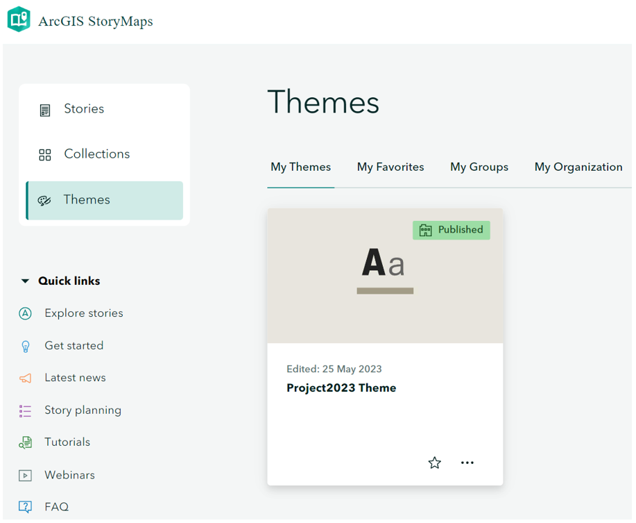
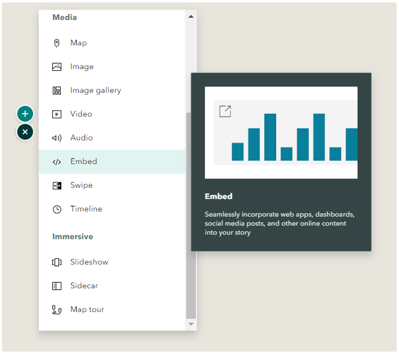
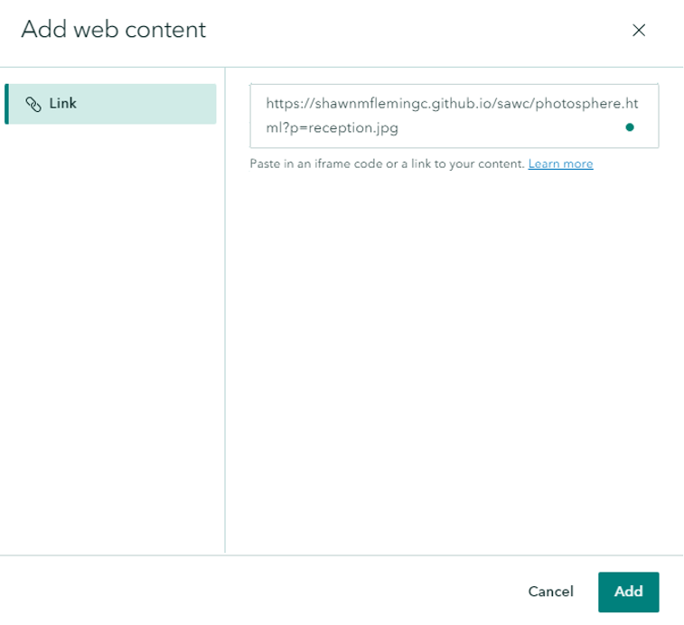
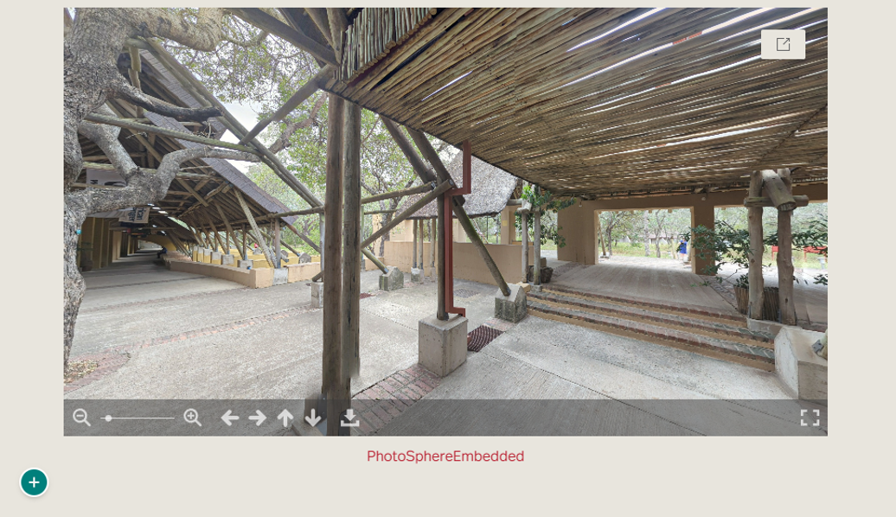

Two ArcGIS StoryMaps (StoryMaps) were created to advertise SAWC and their work using the
custom maps produced by Safari Consulting. Both StoryMaps give a general idea and show
the potential of these as a marketing tool. However, they were intentionally not completed/
published, to allow them to be reviewed and finalized by SAWCs marketing team, and to add
applicable marketing material. The first StoryMap promotes the college and gives reference to
its location relative to Kruger National Park (and major points of interest in the area). The
second StoryMap solely showcases the Guest House at the college, which is an important part
of the college in terms of funding, as it is where donors stay when they visit.
Using ArcGIS StoryMaps and referencing SAWC Annual Reviews, a StoryMaps theme was
configured to complement SAWC’s pre-existing style choices (SAWC, 2021).
The StoryMaps were configured using the web maps created using our custom basemaps and
operational layers, 360 images that were collected, static images, and written content specific
to objective of each StoryMap. The StoryMaps are currently still in the drafting phase and are
to be handed over to SAWC’s marketing team to include further images and written insights
to promote the college.

Creating a Theme in StoryMaps.

Various StoryMaps Content.

Embedding links in StoryMaps. We embedded web links to 360 images.

360 Images can be interacted once embedded.
Displayed below are a few screenshots of the (unpublished) StoryMaps. These are intentionally
not published to allow for further editing and finalization by SAWC staff.
Slideshows, interactive webmaps, and interactive 360 images showcasing the college and Guest House